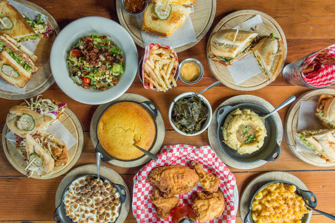

Bluebeard |
653 Virginia Ave. This Kurt Vonnegut-inspired restaurant in happening Fletcher Place offers contemporary Italian-style cuisine in a cozy yet modern outdoor atmosphere. Snacks, charcuteries, and cheeses are offered on a menu that changes daily. Ponder the libations menu while you enjoy fresh baked bread from the in-house bakery, Amelia’s, which provides artisan breads for a number of Indianapolis restaurants and grocers. |
Public Greens |
902 E. 64th St. Look on one side of the the Monon Trail in Broad Ripple and you'll notice a large garden. Look on the other side and you see the large patio at Public Greens where you can enjoy dishes prepared from food growing in said garden. Not only are the dishes fresh and delicious, but all of the proceeds go to the Patachou Foundation which works to feed healthy meals to children in our community suffering from food insecurity. |
The Eagle Food & Beer Hall |
310 Massachusetts Ave. Country touch meets urban cool on the corner of Mass Ave and Delaware Street. The Eagle boasts a lively patio with a full bar and several fire pits, welcoming all to this sparkling watering hole. This pivotal corner of Mass Ave is quickly becoming a busy and happening hot spot for sunny afternoons and warm evenings. |
Fresco Italian Cafe on the Canal |
310 W. Michigan St. With a prime location along the Central Canal, Fresco offers a prime spot for a bite, a drink, or a sweet treat as you people watch and enjoy the view. Treat yourself to Italian Beef, flatbreads, or gelato. For those looking to impress, you can't beat tableside smores for setting a romantic mood. |